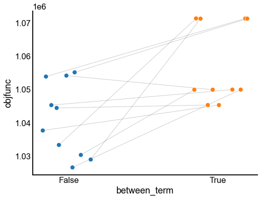
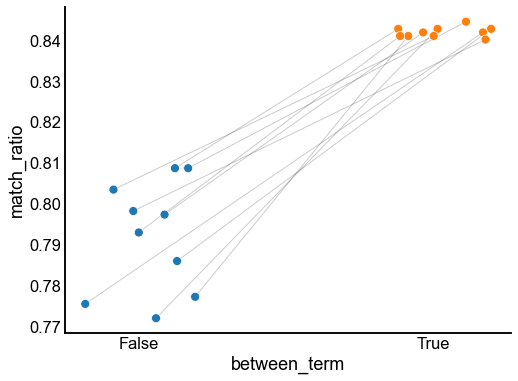

Matching when including the contralateral connections¶
Preliminaries¶
from pkg.utils import set_warnings
set_warnings()
import datetime
import time
import matplotlib.pyplot as plt
import numpy as np
import pandas as pd
from scipy.optimize import linear_sum_assignment
import seaborn as sns
from numba import jit
from giskard.plot import matched_stripplot
from pkg.data import load_maggot_graph
from pkg.io import savefig
from pkg.plot import set_theme
from pkg.utils import get_paired_inds, get_paired_subgraphs
t0 = time.time()
def stashfig(name, **kwargs):
foldername = "matching_w_contra"
savefig(name, foldername=foldername, **kwargs)
set_theme()
colors = sns.color_palette("Set1")
palette = dict(zip(["Left", "Right"], colors))
Load the data¶
mg = load_maggot_graph()
mg = mg[mg.nodes["paper_clustered_neurons"]]
Include the contralateral connections in graph matching¶
Set up the experiment¶
np.random.seed(8888)
maxiter = 30
verbose = False
ot = False
maximize = True
reg = np.nan # TODO could try GOAT
thr = np.nan
tol = 1e-4
n_init = 10
lp_inds, rp_inds = get_paired_inds(mg.nodes)
ll_adj, rr_adj, lr_adj, rl_adj = get_paired_subgraphs(mg.sum.adj, lp_inds, rp_inds)
n = len(lp_inds)
@jit(nopython=True)
def compute_gradient(A, B, AB, BA, P):
return A @ P @ B.T + A.T @ P @ B + AB @ P.T @ BA.T + BA.T @ P.T @ AB
@jit(nopython=True)
def compute_step_size(A, B, AB, BA, P, Q):
R = P - Q
# TODO make these "smart" traces like in the scipy code, couldn't hurt
# though I don't know how much Numba cares
a_cross = np.trace(AB.T @ R @ BA @ R)
b_cross = np.trace(AB.T @ R @ BA @ Q) + np.trace(AB.T @ Q @ BA @ R)
a_intra = np.trace(A @ R @ B.T @ R.T)
b_intra = np.trace(A @ Q @ B.T @ R.T + A @ R @ B.T @ Q.T)
a = a_cross + a_intra
b = b_cross + b_intra
if a * obj_func_scalar > 0 and 0 <= -b / (2 * a) <= 1:
alpha = -b / (2 * a)
return alpha
# else:
# alpha = np.argmin([0, (b + a) * obj_func_scalar])
# return alpha
@jit(nopython=True)
def compute_objective_function(A, B, AB, BA, P):
return np.trace(A @ P @ B.T @ P.T) + np.trace(AB.T @ P @ BA @ P)
Run the graph matching experiment¶
rows = []
for init in range(n_init):
if verbose > 0:
print(f"Initialization: {init}")
shuffle_inds = np.random.permutation(n)
correct_perm = np.argsort(shuffle_inds)
A_base = ll_adj.copy()
B_base = rr_adj.copy()
AB_base = lr_adj.copy()
BA_base = rl_adj.copy()
for between_term in [True, False]:
init_t0 = time.time()
if verbose > 0:
print(f"Between term: {between_term}")
A = A_base
B = B_base[shuffle_inds][:, shuffle_inds]
AB = AB_for_obj = AB_base[:, shuffle_inds]
BA = BA_for_obj = BA_base[shuffle_inds]
if not between_term:
AB = np.zeros((n, n))
BA = np.zeros((n, n))
P = np.full((n, n), 1 / n)
obj_func_scalar = 1
if maximize:
obj_func_scalar = -1
for n_iter in range(1, maxiter + 1):
# [1] Algorithm 1 Line 3 - compute the gradient of f(P)
currtime = time.time()
grad_fp = compute_gradient(A, B, AB, BA, P)
if verbose > 1:
print(f"{time.time() - currtime:.3f} seconds elapsed for grad_fp.")
# [1] Algorithm 1 Line 4 - get direction Q by solving Eq. 8
currtime = time.time()
if ot:
# TODO not implemented here yet
Q = alap(grad_fp, n, maximize, reg, thr)
else:
_, cols = linear_sum_assignment(grad_fp, maximize=maximize)
Q = np.eye(n)[cols]
if verbose > 1:
print(
f"{time.time() - currtime:.3f} seconds elapsed for LSAP/Sinkhorn step."
)
# [1] Algorithm 1 Line 5 - compute the step size
currtime = time.time()
alpha = compute_step_size(A, B, AB, BA, P, Q)
if verbose > 1:
print(
f"{time.time() - currtime:.3f} seconds elapsed for quadradic terms."
)
# [1] Algorithm 1 Line 6 - Update P
P_i1 = alpha * P + (1 - alpha) * Q
if np.linalg.norm(P - P_i1) / np.sqrt(n) < tol:
P = P_i1
break
P = P_i1
_, iteration_perm = linear_sum_assignment(-P)
match_ratio = (correct_perm == iteration_perm).mean()
objfunc = compute_objective_function(A, B, AB_for_obj, BA_for_obj, P)
if verbose > 0:
print(
f"Iteration: {n_iter}, Objective function: {objfunc:.2f}, Match ratio: {match_ratio:.2f}"
)
row = {
"init": init,
"iter": n_iter,
"objfunc": objfunc,
"match_ratio": match_ratio,
"between_term": between_term,
"time": time.time() - init_t0,
}
rows.append(row)
if verbose > 0:
print("\n")
_, perm = linear_sum_assignment(-P)
if verbose > 0:
print("\n")
results = pd.DataFrame(rows)
results
| init | iter | objfunc | match_ratio | between_term | time | |
|---|---|---|---|---|---|---|
| 0 | 0 | 1 | 2.439440e+05 | 0.119651 | True | 3.882579 |
| 1 | 0 | 2 | 5.403489e+05 | 0.303057 | True | 4.597101 |
| 2 | 0 | 3 | 7.584659e+05 | 0.536245 | True | 5.387571 |
| 3 | 0 | 4 | 8.597453e+05 | 0.705677 | True | 6.125518 |
| 4 | 0 | 5 | 9.131593e+05 | 0.791266 | True | 6.823432 |
| ... | ... | ... | ... | ... | ... | ... |
| 578 | 9 | 26 | 1.028481e+06 | 0.797380 | False | 21.769940 |
| 579 | 9 | 27 | 1.028621e+06 | 0.796507 | False | 22.507314 |
| 580 | 9 | 28 | 1.028734e+06 | 0.796507 | False | 23.282349 |
| 581 | 9 | 29 | 1.028840e+06 | 0.797380 | False | 24.036791 |
| 582 | 9 | 30 | 1.028932e+06 | 0.798253 | False | 24.783914 |
583 rows × 6 columns
Plot the results¶
last_results_idx = results.groupby(["between_term", "init"])["iter"].idxmax()
last_results = results.loc[last_results_idx].copy()
fig, ax = plt.subplots(1, 1, figsize=(8, 6))
matched_stripplot(
last_results,
jitter=0.2,
x="between_term",
y="objfunc",
match="init",
hue="between_term",
)
stashfig("between-objfunc")
fig, ax = plt.subplots(1, 1, figsize=(8, 6))
matched_stripplot(
last_results,
jitter=0.2,
x="between_term",
y="match_ratio",
match="init",
hue="between_term",
)
stashfig("between-match-ratio")


End¶
elapsed = time.time() - t0
delta = datetime.timedelta(seconds=elapsed)
print("----")
print(f"Script took {delta}")
print(f"Completed at {datetime.datetime.now()}")
print("----")
----
Script took 0:09:32.367455
Completed at 2021-04-02 09:48:19.888251
----